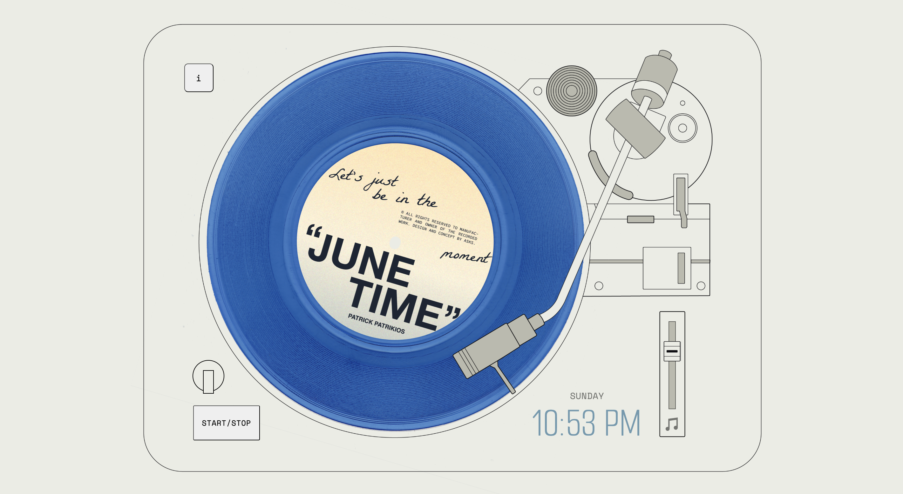

Reflection
Self-reflection and self-criticality are important skills as a designer in any medium, and the written reflection is not only a chance to highlight the things you did well, but to look at the parts that you think could have been approached in a different manner. When I assess reflections, I value an honest discussion of the process, and am looking for an engagement with your own perspective of what occurred as you were building your UI.
While there's no word limit or suggestion on the written component, there are 6 different points you are required to highlight. They are a separated list, and I'll briefly touch on each below, however your reflection doesn't need to be formatted as a paragraph on each. While it may be good to use the keywords (values, feedback, learnability etc) to signal their discussion in your writing, these different points should relate to each other, your UIs concept, and the way it responds to the creative prompt and advanced technique. As such integrating them together within the structure of your reflection will typically make sense.
I am generally satisfied with the final UI (user interface) of the project, as I have accomplished all the functions I had set out to achieve during the planning stage and more. I have definitely learnt a lot from all the trial and error and problem solving, and improved on my skills in HTML, CSS and especially Javascript over the course of working on this project.
Your design's guiding values and how they were embodied in the UI.
Learnability
To assist with the learnability of the UI, I implemented introduction and information dialogs. When the page loads for the user, the introduction dialog alerts them that the interface will play audio and the user has to acknowledge this before the music starts to play. This will lessen confusion for the users when they visit the interface for the first time, and they would not be caught off guard when the music plays.
The information dialog is partially disguised in the main interface as I did not want it to distract the users from the main UI. The role of this dialog is to inform the user of the recreational purpose behind the interface, as well as of the time feature that updates the music and appearance of the interface, so that they would be able to engage with interface with that context. There is intentionally no information about the other functions on the interface as I believed that the feedback would sufficiently help users to learn those functions.
Your rationale in designing your UI's feedback, information design, mapping and learnability.
Tying back to what we covered at the start of semester, you should discuss and reflect upon how each of these concepts are deployed within your design. This doesn't mean covering each single aspect of information design, for example, in your UI, but highlighting one or two specific cases as a manner of discussing a broader approach. This approach might directly connect to your values, or to other of the core concepts, or even technical and production restrictions.
Any significant changes since your work in progress milestone.
From the prototype submission in assignment 2, I successfully incorporated
the feedback from the peer-testing session and consultations, as additional
functionalities that I thought would improve the UI. This included the
date.now() features, that updates the vinyl colour, music and ambient
sound based on the time of day, as well as display the current day and
time on the user’s device-which also changes colour as the vinyl updates.
I successfully got the volume slider to control the volume of the music, and added a
mute button function so that the user can more conveniently toggle the volume to
mute and vice-versa. This accessibility function was achieved by using svg paths
and CSS classes, I had designed the vector logos myself in illustrator and later
imported them into visual studio code. I chose to work with an svg format instead
of img because it would allow me more flexibility to customise the hover appearance.
This actually caused a little snag in my project, as I could not link the javascript function
to the HTML code successfully with the svg images. But after discussing during consultations,
I managed to figure out the solution, which was to define the path coordinates directly in javascript
instead to trying to change the svg class itself. I also had the default slider
value to be at 70 instead of 50, since it was more conventional for a volume slider
to be set above half volume. That and the addition on the music icon was to better
signal to users that the slider controls volume, instead of the conventional speed sliders found on turntables.
I also updated the information dialog to include more information about the
UI changing based on day, afternoon and night, as I was told that this would bring
better clarity to the date.now() function of the UI with the right amount of
specificity. I also added all my audio references, all copyright-free,
in this dialog using the details and summary elements to insert it into a
dropdown menu. As this information might be less important to users, I felt that
it was appropriate for this information to be hidden unless the user wants to look
for it, as the sheer amount of text could make the UI too distracting.
Your navigation of the production timeline and how you spent your development time.
One of my greatest takeaways in coding JavaScript was learning the difference in declarations (eg.const, let and var). I had encountered some issues where I had multiple const declarations for the same element, which created errors in my code. I circumvented this problem by using different var declarations catered to each specific function I wanted to write instead. With this method though, I had to make sure that I gave each var declaration very detailed names, so that the declaration names would not overlap in my extensive javascript document.
A complication I encountered along the way was overlapping code. As I started to expand the project with more functions, I had to alter or remove some of the older code in order to make sure the new code runs effectively. For example, in the prototype, I had separate functions to call the start of the vinyl record rotation and the music to play when the ‘close’ button in the introduction dialog, and this worked smoothly at the time. However later on, when I added the animation of the needle, I wanted the vinyl record to start rotating only after the needle reaches its final position, and for the music to start playing after that delay as well. To achieve this, I wrote an entirely new function, making use of the classList and setTimeout properties. This new function worked, but I realised when I previewed the interface, the music started to play immediately upon landing on the site without any user actions. I was perplexed by this, but I went through the code with the audio id and I found out it was because the initial code to play the music on ‘close' had a .play() written into it. Because I had shifted around the older code to make sure the new one works effectively, I had accidentally created conflicting instructions in the script and am now calling for the music to be played automatically when the site loads. I commented out the .play() line, and the music does not play automatically anymore.
Another minor issue I was tussling with was the design of the UI. For this project, I chose to base It off a nu-brutalist aesthetic. As I have always been a maximalist when it comes to my design style, it was a challenge that I chose to give myself this year to create more minimalist designs. That being said, when I had already incorporated all the functionality that I had planned, I could not help but feel like something was missing. But I accessed that in the end, the simplicity of the UI would provide users with a comfortable experience, and to add anything more would overcomplicate it.
The design aspect that you are most proud of.
The design aspect that I am most proud of is the vinyl record animation. It is the combination of factors that makes it my favourite: the typography and colours that set the mood for the listener through visual design, the responsiveness of the play and pause function, and of course, the music that is playing. These factors really complement each other and creates a very satisfying experience overall. It is exactly as I envisioned when I was ideating this project.
The design aspect you found most challenging.
The final two are different sides of the same coin. I've specifically avoided using positive/negative wording, and focused on your perspective, versus what you think others might perceive in your final UI. Maybe you're most proud of an underlying JS function that no user will ever see, or you found making your characterisation cohesive the most challenging, even if you think it was ultimately successful.
update header

🌅 Morning Version (12am-8am)
🌇 Midday Version (8am-4pm)
🌃 Night Version (4pm-12am)
Like the previous two assignments this submission will be a small web
page - this should be separate to your UI, and contain the required
written reflection and links. Use this format to your advantage - you
don't have to make it complex, but remember you are able to use
embedded links, images and videos as part of communicating your
reflection. This includes the required links - for example you need to
reflect on significant changes between your
prototype
and
finished UI
, and you are able to point to them directly to support your
discussion. Or you could link to a specific code file in your repo
with a line reference, as a way to support your rationale for
designing the UI's mapping.
As my background largely lies In motion graphics and graphic design, coding an interface such as this has really presented me with an interesting challenge. Although it was very daunting in the beginning, I started with the part that felt most comfortable for me: design. Once I had defined and mapped out the problems I had to solve in order to achieve my final design, everything slowly came together piece by piece, learning from the consultations to break down the steps and logic was especially helpful. Coding was frustrating and very mind-boggling at times, but with every error I encountered, I became more determined to solve the problems I encountered.